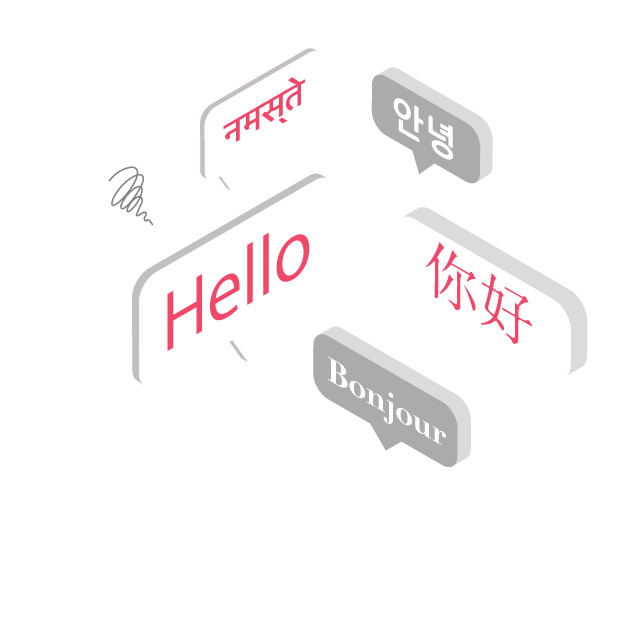
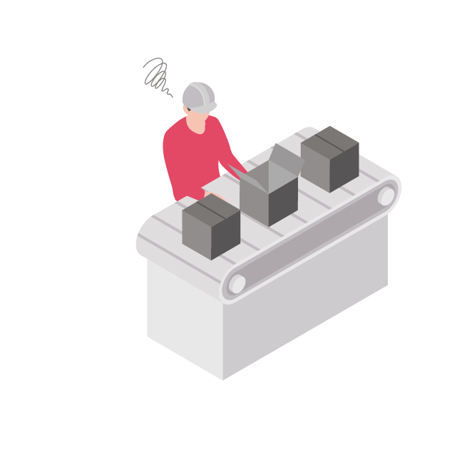
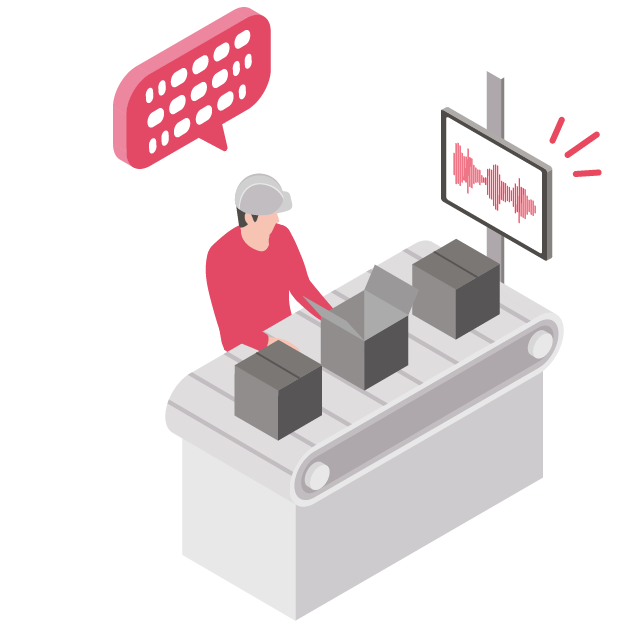
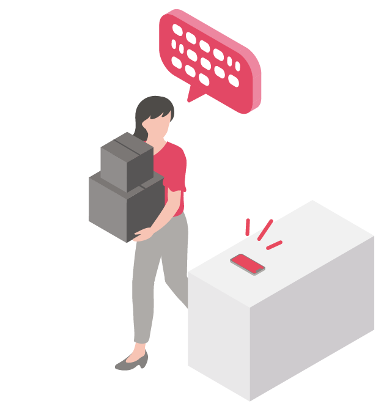
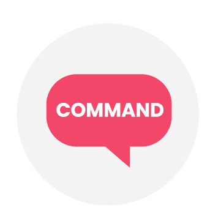
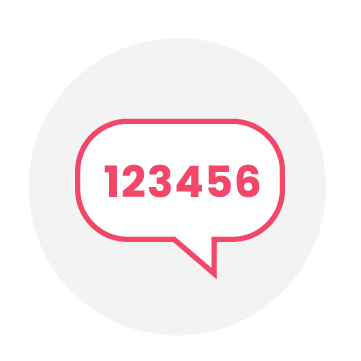
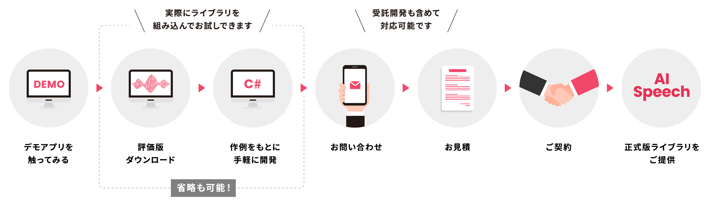

音声認識AIはさまざまなシーンで業務効率化・拡大を実現します。
経営会議の議事録作成は
毎回人手がかかる・・・
機密性の高い会議でもオフラインで自動議事録作成！

国際会議は
毎回通訳の手配が大変・・・
リアルタイム翻訳で人件費を削減。99言語に対応

製造現場の
生産性を向上させたい・・・
機械への音声入力で製造プロセスを効率化！

手が使えない環境で
メモを取りたい・・・
音声入力でAIが正確に文字起こし。スマートフォンでも！

アイリア AI Speechならではの導入メリットや充実の機能をご紹介します。
ChatGPTを開発したOpen AI社のAIモデルを採用し、高精度な音声認識を実現しました。文字起こしはもちろん、その後の手直しの手間が大幅に軽減され、生産性アップにつながります。

クラウドにアクセスせずオフラインで動作するため、機密性の高い情報も情報漏洩リスクを最小限に抑えながら安全に記録可能。通信環境に左右されず、どこでも安心して使えます。長時間の会議にも時間制限なく対応します。

既存のシステムやアプリケーションへの組み込みも可能なライブラリ形式で提供。C APIに加え、UnityプラグインにもHaveしており、Unity開発のアプリへの音声認識機能追加も容易です。

サーバを使用しないため、使用量に応じた課金なしで使い放題。ユーザー数が増えても追加費用はかかりません。

現場で役立つ機能を豊富に揃えています。
99言語対応
マルチリンガルのAIモデルを使用しており、日本語・中国語・英語を含む99言語の認識が可能です。
オフライン
クラウド不要で端末だけで音声認識を実行可能です。機密度の高い内容でも安全に実行可能です。
翻訳
中国語・日本語を含む99言語を英語に翻訳可能です。
マルチデバイス対応
Windows PC だけでなく、macOS、iOS、Android、Linuxでも動作します。
辞書登録
CSVの辞書を読み込んで、音声認識誤りを置換します。
話者識別
誰が話しているかを自動で見分け、複数話者の会話も正確に整理。会議記録や対話ログの精度を高めます。
無音検知
音声中の無音区間を自動検出し、不要な部分をスキップ。録音・解析の効率を大幅に改善します。
＼ 追加実装予定 ／
今後も新AIモデルの組み込みや便利な機能の追加を続けていきます。

音声コマンド
数値入力導入からサポートまでの流れをご紹介します。お気軽にお試しください！

専門のスタッフが一環してサポートします。
導入〜開発〜使用中のサポートは、メール・お電話・MTGいずれも対応可能です。
開発拠点・本社機能ともに国内のため、迅速かつ手厚くフォローアップさせていただきます。
よくいただく質問と回答を掲載しています。
利用可能なパソコン・スマートフォンのスペックを教えてください。
macOS環境ではM1以上のCPUと8GB以上のメモリが必要です。
iOS環境ではA15以上のCPUと4GB以上のメモリが必要です。
Android環境ではSnapdragon888以上のCPUと4GB以上のメモリが必要です。
GPUは使用できますか？
音声認識の精度を向上させるには？
AI開発支援サービス「アイリア WORKS」
AI開発支援サービス「アイリア WORKS」
AI技術の提供だけでなく、様々なAI開発支援を通して
お客様に最適な課題解決をご提案。
議事録機能の実装や音声操作機能の開発など、
お客様のあらゆるニーズにお応えします。